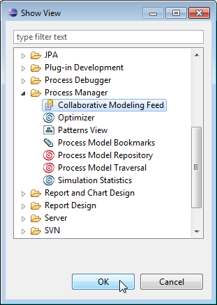
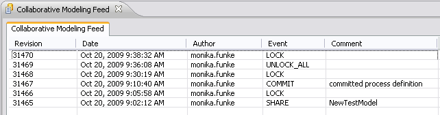
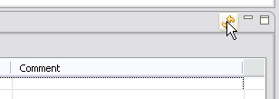
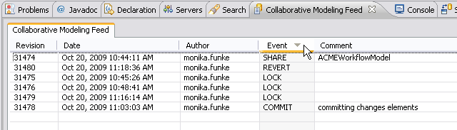

To watch collaborative modeling activities, Stardust provides the Collaborative Modeling Feed View.
To open the Collaborative Modeling Feed View:

Figure: Open the Collaborative Modeling Feed View
The view provides the following information:

Figure: The Collaborative Modeling Feed View
In the upper right corner, a refresh button is provided to update the table and also refresh the entries in the Outline view, e.g. to indicate if meanwhile another user has locked or changed an element.

Figure: Update the View
By default, the entries in the table are sorted by the revision number in descending order. You can determine to sort by another column by clicking in its header. Clicking again reverses the sorting order. The column by which values the table is ordered is indicated by an arrow pointing down for descending order and pointing up for ascending order.

Figure: Collaborative Modeling Feed View Sorted by Event Entries.
The Author, the Event and the Comment columns are sorted alphabetically.